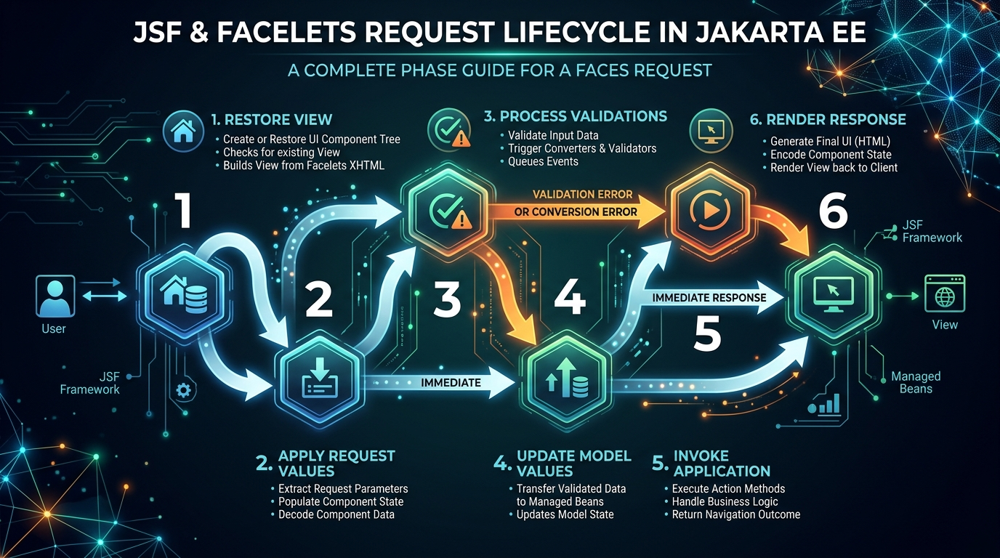

<title>Session 5 — Facelets, Explained Slowly</title>
<meta name="viewport" content="width=device-width, initial-scale=1">
<meta name="description" content="Session 5, written for people who have never built a web page. What Facelets and Jakarta Server Faces are, the six legs of the journey a form takes, the four files a small application needs, and how to build your own reusable tags.">
<link rel="stylesheet" href="assets/css/styles.css">
<script>window.PAGE = "s05";</script>

<main class="page">

  <h1>Session 5 · Facelets — How a Web Page Gets Built</h1>
  <p class="lede">Until now your enterprise beans have had no screen. They do work, but nobody can
    see it. This page gives them a screen. You will learn how a <em>server</em> draws a web page for a
    user, what happens in the moment between a button being pressed and the next page appearing, and
    how to build a whole small application yourself. If you have never written a web page, that is
    fine — every new word is explained the moment it arrives.</p>

  <div class="callout callout--key"><span class="callout__i">🎯</span>
    <div class="callout__b"><b>Four promises before we start</b>
      <ol style="margin:.6rem 0 0;padding-left:1.2rem">
        <li><strong>No jargon without a translation.</strong> Each new word gets a plain-English box.</li>
        <li><strong>No web experience assumed.</strong> “Browser”, “form” and “view” all get explained.</li>
        <li><strong>You can watch everything here.</strong> The six-step journey runs on this page, and there is a practice shell.</li>
        <li><strong>You finish with three real files.</strong> Part 3 builds a complete, working Facelets page.</li>
      </ol>
    </div>
  </div>

  <h2>What you will be able to do by the end</h2>
  <p>Not ten bullet points from a manual — just six things, in plain words:</p>
  <div class="tablewrap"><table>
    <thead><tr><th>By the end you can…</th><th>Where it is taught</th></tr></thead>
    <tbody>
      <tr><td>Say what Jakarta Server Faces and Facelets are, in one sentence each</td><td>Part 1</td></tr>
      <tr><td>Explain why a page is a <em>tree of objects</em> rather than a block of text</td><td>Part 1</td></tr>
      <tr><td>Walk through the six steps a submitted form goes through, in order</td><td>Part 2</td></tr>
      <tr><td>Say why a failed validation jumps straight to the last step</td><td>Part 2</td></tr>
      <tr><td>Name the four files a Facelets application needs, and what each one does</td><td>Part 3</td></tr>
      <tr><td>Wrap a repeated piece of screen into your own reusable tag</td><td>Part 4</td></tr>
    </tbody>
  </table></div>

  <div class="callout"><span class="callout__i">📖</span>
    <div class="callout__b"><b>How to read this page</b>
      The small labels on the left of each block tell you what kind of block it is.
      <ul style="margin:.6rem 0 0">
        <li><code>// concept</code> — an explanation to read.</li>
        <li><code>// try it</code> — press <strong>Run</strong> and experiment.</li>
        <li><code>// checkpoint</code> — a quick self-test. Answers are hidden until you ask.</li>
        <li><code>// terminal</code> — a pretend command line. Nothing touches your computer.</li>
        <li><code>// check yourself</code> — the quiz.</li>
        <li><code>// recap</code> — the one-line summary of everything.</li>
      </ul>
      Read it top to bottom the first time. It is written in the order that makes it easiest, not the
      order a textbook would use.
    </div>
  </div>

  <hr>

  <!-- =====================================================================
       PART 1 — WHERE THE WEB PAGE COMES FROM
       ===================================================================== -->

  <span class="eyebrow">concept</span>
  <h2>Part 1 · Where the web page actually comes from</h2>

  <h3>1.1 A bean with no screen</h3>
  <p>Your <code>GreeterBean</code> can greet somebody. But a user cannot see a bean. A user needs
    something on a screen to look at, and something to type into.</p>
  <p>So what <em>is</em> that thing on the screen? A <strong>web page</strong> is text that a program
    called a <strong>browser</strong> has been taught how to draw. The text is called
    <strong>HTML</strong>. Some pages also contain a <strong>form</strong> — a set of boxes and a
    button. When the user presses the button, the browser collects what they typed and sends it back
    to the server.</p>
  <p>That is the whole shape of the web: a server sends text, the browser draws it, the user submits
    something, the server responds. The only real question is: <strong>who builds that text?</strong></p>

  <p>There are two answers, and they are the whole reason this session exists:</p>
  <ul>
    <li><strong>You build it by hand.</strong> Your code glues strings of HTML together and prints
      them. Simple at first, a nightmare once the page has fifty boxes.</li>
    <li><strong>The server builds it for you.</strong> You tell the server “there is a text box here”
      and “there is a button there”, and the server draws the HTML, reads the values back, and knows
      what each box means. This is the approach we learn today.</li>
  </ul>

  <h3>1.2 The idea: the server remembers the boxes</h3>
  <p>Here is the surprising part, and it is the key to everything on this page.</p>
  <p>When you use this approach, the server does not just send some text and forget about it. It also
    keeps, <em>on its own memory</em>, a live model of every box, button and table on the page. Each of
    those is a real Java object. Those objects nest inside one another, so the server is holding a
    small <strong>tree of objects</strong> that mirrors the page.</p>
  <p>When the user presses the button, the server compares what came back with its model and updates
    the objects. Because the server knows what each box was, it can also check the value, convert it,
    and hand it to your Java bean.</p>

  <div class="plainwords"><b>In plain words</b>
    <p>Ordinary HTML is like a photograph of a form: once it is printed, it is only paper.</p>
    <p>With the approach we are learning, the server keeps the <strong>original form</strong> — a live
      set of objects — and can therefore read it, check it, and change it. You write the boxes once;
      the server keeps them alive on every round trip.</p>
  </div>

  <h3>1.3 So what is Jakarta Server Faces?</h3>
  <p>Now we can define the first big word.</p>

  <div class="callout callout--key"><span class="callout__i">✦</span>
    <div class="callout__b"><b>Jakarta Server Faces</b>
      <strong>Jakarta Server Faces (JSF)</strong> is a standardised, <strong>server-side</strong> user
      interface framework, built on the <strong>component-tree model</strong>. Instead of writing raw
      HTML strings or JSP scriptlets, a JSF application assembles pages out of reusable, stateful UI
      components — inputs, buttons, tables — each backed by a Java object.</div>
  </div>

  <p>That sentence is dense, so here it is pulled apart word by word:</p>
  <div class="tablewrap"><table>
    <thead><tr><th>Word</th><th>What it actually means</th></tr></thead>
    <tbody>
      <tr><td><strong>Framework</strong></td><td>A ready-made structure and set of pieces that you build inside, rather than starting from an empty file.</td></tr>
      <tr><td><strong>Server-side</strong></td><td>The work happens on the company's machine, not in the user's browser. The browser only draws what it is sent.</td></tr>
      <tr><td><strong>Component</strong></td><td>One piece of the page with a life of its own — a text box, a label, a button, a table. Each has its own value and behaviour.</td></tr>
      <tr><td><strong>Component tree</strong></td><td>All those components, nested inside one another, held in memory as objects. A form containing a label and a box is already a tiny tree.</td></tr>
      <tr><td><strong>JSP scriptlet</strong></td><td>The old way: small blobs of Java code written straight inside the page text. Messy, and now retired.</td></tr>
    </tbody>
  </table></div>

  <div class="plainwords"><b>In plain words</b>
    <p>JSF turns a web page from a wall of text into a <strong>set of objects the server
      understands</strong>. You say “text box” and “button”, not “print these angle brackets”.</p>
    <p>Because the server understands the objects, it can also do the boring parts for you — reading
      the typed values, converting them to numbers, checking them, and putting them into your Java
      bean.</p>
  </div>

  <h3>1.4 And what is Facelets?</h3>
  <p>Now the second big word — and it is easier, because it answers a different question.</p>
  <p>If JSF is the machinery in the server that understands components, then <strong>Facelets</strong>
    is the <strong>language you write those pages in</strong>.</p>

  <div class="callout callout--key"><span class="callout__i">✦</span>
    <div class="callout__b"><b>Facelets</b>
      <strong>Facelets</strong> is the default <strong>view declaration language</strong> for modern
      JSF. It replaces the older, legacy JSP files with clean, well-formed <strong>XHTML</strong>
      templates.</div>
  </div>

  <div class="tablewrap"><table>
    <thead><tr><th>Word</th><th>What it actually means</th></tr></thead>
    <tbody>
      <tr><td><strong>View</strong></td><td>One page, as the server sees it. “The view” is the page currently being built or shown.</td></tr>
      <tr><td><strong>View declaration language</strong></td><td>The way you <em>declare</em> what a view looks like. English, just in a very strict grammar.</td></tr>
      <tr><td><strong>XHTML</strong></td><td>HTML written to strict rules: every tag must be properly closed, and tags must nest neatly. Extra typing, far fewer bugs.</td></tr>
      <tr><td><strong>JSP</strong></td><td>JavaServer Pages — the older page language Facelets replaced. You will still meet it in old books.</td></tr>
    </tbody>
  </table></div>

  <div class="callout callout--analogy"><span class="callout__i">🎭</span>
    <div class="callout__b"><b>Analogy</b>
      Picture a puppet show. In plain HTML you are the puppeteer <em>and</em> the stagehand: you thread
      every string, paint every puppet, and move every joint yourself. With Facelets, the server keeps
      a live cast of actors (the components). You say “this actor has a text box”, press a button, and
      the server moves the actor, checks its state, runs your bean's method, and re-draws the stage.</div>
  </div>

  <h3>1.5 A page is objects that nest</h3>
  <p>Look at any real page and you will see the same shape repeated: a page contains a form; the form
    contains a label, a text box and a button; the button contains a piece of text. Every one of those
    is an object, and every object knows its parent and its children.</p>
  <p>That is all a “component tree” means — the same nesting you would draw on paper, but held in the
    server's memory.</p>

  <div class="callout callout--analogy"><span class="callout__i">🪆</span>
    <div class="callout__b"><b>Analogy</b>
      Russian nesting dolls. Open the big one and there is a smaller one inside; open that and there is
      another. The page is the biggest doll, the form is inside it, and the button is inside the form.
      The server holds the whole set, and can open any doll to look at what is inside.</div>
  </div>

  <div class="callout callout--tip"><span class="callout__i">💡</span>
    <div class="callout__b"><b>The one thing to notice</b>
      Because the server holds the objects and not just text, it can <em>do things</em> to them: set
      their values, convert them, validate them, and ask your bean for data to display.</div>
  </div>

  <h3>1.6 The five features that make this worth using</h3>
  <p>This table is the honest list of why a company chooses this over hand-written HTML. Read the
    left column now; the right column is what you would otherwise have to build yourself.</p>

  <div class="tablewrap"><table>
    <thead><tr><th>Feature</th><th>Advantage in enterprise applications</th></tr></thead>
    <tbody>
      <tr><td><strong>Component-centric</strong></td><td>UI elements manage their own rendering, state saving, and event handling.</td></tr>
      <tr><td><strong>Template reuse</strong></td><td><code>&lt;ui:composition&gt;</code> and <code>&lt;ui:decorate&gt;</code> eliminate duplicate headers, footers and sidebars.</td></tr>
      <tr><td><strong>Expression Language (EL)</strong></td><td><code>#{bean.property}</code> seamlessly binds view inputs to Java getter and setter methods.</td></tr>
      <tr><td><strong>Built-in validation</strong></td><td>Automatic conversion and validation <em>before</em> any business method runs.</td></tr>
      <tr><td><strong>No scriptlets</strong></td><td>Strict XML syntax prevents developers from cluttering the presentation with raw Java code.</td></tr>
    </tbody>
  </table></div>

  <h3>1.7 Expression Language — the glue between page and bean</h3>
  <p>Two of those features need a new word straight away: <strong>Expression Language</strong>.</p>
  <p>Somewhere in the page you want to show the greeting your bean produced. Facelets lets you write a
    tiny instruction for that, wrapped in <code>#{ }</code>. Here is the whole idea in one line of a
    view:</p>

  <pre><code>&lt;p&gt;&lt;h:outputText value="#{helloWorld.message}"/&gt;&lt;/p&gt;</code></pre>

  <p>The <code>#{helloWorld.message}</code> part is <strong>Expression Language (EL)</strong> — a small
    expression the server evaluates. It says: “find the object called <code>helloWorld</code>, and ask
    it for its <code>message</code>.” The server does that by calling a Java method,
    <code>getMessage()</code>, and writes the result into the page.</p>
  <p>Put the same kind of expression on an <em>input</em> box instead of an output, and it works in
    both directions: the server reads the bean's value to fill the box, and — when the user submits —
    it writes the typed value back into the bean. That two-way behaviour is called
    <strong>binding</strong>, and it is the single most useful thing on this page.</p>

  <div class="plainwords"><b>In plain words</b>
    <p><code>#{bean.property}</code> is a message from the page to the server: “put the bean's value
      here,” or “take what the user typed and put it there.”</p>
    <p>It is short because the server does the work — you never write the code that fetches or stores
      the value yourself.</p>
  </div>

  <div class="callout callout--mistake"><span class="callout__i">⚠️</span>
    <div class="callout__b"><b>The trap: <code>#{ }</code> is not JavaScript</b>
      Nothing inside <code>#{ }</code> reaches the browser. The server replaces it with a plain value
      <em>before</em> the page is sent. So a browser viewing the page above never sees
      <code>#{helloWorld.message}</code> — it sees the greeting text. Forget this and you will hunt
      for a bug in the wrong program.</div>
  </div>

  <h3>1.8 Your page is built from ready-made tags</h3>
  <p>You do not invent these tags. Facelets gives you a shelf of them, grouped into small libraries.
    Each library is switched on in the page with an <code>xmlns:</code> line at the top. The
    templating library is called <code>ui</code>:</p>

  <pre><code>&lt;html xmlns="http://www.w3.org/1999/xhtml"
      xmlns:h="jakarta.faces.html"
      xmlns:ui="jakarta.faces.facelets"&gt;</code></pre>

  <p>Five tags from the <code>ui</code> library do most of the work in a real application:</p>

  <div class="tablewrap"><table>
    <thead><tr><th>Tag</th><th>Purpose</th><th>Description</th></tr></thead>
    <tbody>
      <tr><td><code>&lt;ui:composition&gt;</code></td><td>Page template wrapper</td><td>Defines a page composition, ignoring any surrounding content outside this tag.</td></tr>
      <tr><td><code>&lt;ui:define&gt;</code></td><td>Named content block</td><td>Fills a specific placeholder defined in a master template.</td></tr>
      <tr><td><code>&lt;ui:insert&gt;</code></td><td>Template placeholder</td><td>Designates an insertion point in the master template (e.g. body, header).</td></tr>
      <tr><td><code>&lt;ui:include&gt;</code></td><td>Modular page fragment</td><td>Encapsulates and pulls in another XHTML file (like a navigation menu).</td></tr>
      <tr><td><code>&lt;ui:repeat&gt;</code></td><td>Iterative loop</td><td>Loops over a collection or list of objects to render repeated UI elements.</td></tr>
    </tbody>
  </table></div>

  <div class="callout callout--tip"><span class="callout__i">💡</span>
    <div class="callout__b"><b>The one thing to notice</b>
      <code>&lt;ui:insert&gt;</code> and <code>&lt;ui:define&gt;</code> are a pair. The master template
      <em>inserts</em> a placeholder (“put the header here”); each individual page <em>defines</em>
      what goes into it. One header, written once, used by every page of the site.</div>
  </div>

  <div class="checkpoint"><b>Checkpoint 1 · before you move on</b>
    <p>Answer out loud, in your own words. Then open the answers.</p>
    <ol>
      <li>What is the difference between JSF and Facelets, in one sentence each?</li>
      <li>Why does it help that the server keeps a <em>tree of objects</em> instead of just sending text?</li>
      <li>What does <code>#{helloWorld.message}</code> actually do, and when?</li>
    </ol>
    <details>
      <summary><strong>Show answers</strong></summary>
      <ol>
        <li><strong>JSF</strong> is the server-side framework that provides and manages UI components
          (the component-tree model). <strong>Facelets</strong> is the view declaration language you
          write those pages in — the default one for modern JSF, using XHTML.</li>
        <li>Because objects can be <strong>read, converted, validated and updated</strong>, while a
          block of text cannot. The server can check a submitted value and put it into your bean
          automatically.</li>
        <li>The server finds the bean named <code>helloWorld</code>, calls its Java method
          <code>getMessage()</code>, and writes the returned value into the page — all on the server,
          before the page is sent.</li>
      </ol>
    </details>
  </div>

  <hr>

  <!-- =====================================================================
       PART 2 — THE 6-PHASE REQUEST LIFECYCLE
       ===================================================================== -->

  <span class="eyebrow">concept</span>
  <h2>Part 2 · What happens between the click and the new page</h2>

  <h3>2.1 One click starts six jobs</h3>
  <p>When a user presses a button on a Facelets page, a lot has to happen before the next page appears.
    The server does not do it in one lump. It does it as a strict sequence of <strong>six
    steps</strong>, and every single step has to finish — or be deliberately skipped — before the next
    one begins.</p>
  <p>This sequence has a formal name: the <strong>request processing lifecycle</strong>. Examiners
    love it. The good news is that the idea behind it is completely ordinary.</p>

  <div class="callout callout--analogy"><span class="callout__i">🏃</span>
    <div class="callout__b"><b>Analogy</b>
      A relay race with six legs. The baton is the user's request. One runner cannot start until the
      previous one has handed the baton over. Six runners later, the response crosses the finish line
      and goes back to the browser.<br>
      And like a real relay, there is one rule that can cut the race short: if a runner finds a
      problem, the baton goes straight to the <em>last</em> runner and the middle legs are skipped.</div>
  </div>

  <h3>2.2 The two kinds of request</h3>
  <p>One word has to be introduced before the six legs make sense: <strong>postback</strong>.</p>
  <ul>
    <li><strong>The first visit.</strong> The user opens the page for the first time. There are no
      values to read back — the server must build the component tree from scratch.</li>
    <li><strong>A postback.</strong> The user is <em>returning</em> to the same page, usually by
      pressing a button or submitting a form. This time the server already has the page's objects from
      before, and it has also stored their values in a hidden place — the <strong>view state</strong>.
      It restores them, then reads what the user just typed.</li>
  </ul>

  <div class="plainwords"><b>In plain words</b>
    <p>“Postback” simply means <strong>the user sent something back to the page they were already
      on</strong>. The server remembers what the page looked like last time, so it does not have to
      guess.</p>
  </div>

  <h3>2.3 The six legs, one at a time</h3>
  <p>Here they are in order. Each has a formal name (the one an exam will use) and a plain-English
    description of what actually happens.</p>

  <h4>Leg 1 — Find the page's memory — <em>“Restore View”</em></h4>
  <p>The container locates or constructs the component tree for the requested page, and holds it inside
    the <code>FacesContext</code> — the object that represents “this request, right now”. On a first
    visit the tree is built fresh; on a postback, the saved view state is restored.</p>

  <h4>Leg 2 — Read what the user typed — <em>“Apply Request Values”</em></h4>
  <p>Each component decodes the HTTP request parameters sent back by the browser and stores the raw
    value locally on itself. Nothing is converted or checked yet — it is parked exactly as typed, as
    text.</p>

  <h4>Leg 3 — Check it makes sense — <em>“Process Validation”</em></h4>
  <p>Now the raw text is turned into the right type (a string becomes a number, a date, a boolean), and
    the validation rules are run. <strong>If validation fails, processing jumps directly to Leg 6</strong>
    — the response is re-rendered so the user can see the error messages and try again.</p>

  <h4>Leg 4 — Save it into your bean — <em>“Update Model Values”</em></h4>
  <p>The validated values are copied out of the components and into the properties of your server-side
    backing bean — by calling its setters. This is where the page's data finally becomes your Java
    object's data.</p>

  <h4>Leg 5 — Run your business method — <em>“Invoke Application”</em></h4>
  <p>The action method runs — the one named in the button, such as
    <code>action="#{bean.transferFunds}"</code>. It does the real work and returns a navigation
    outcome that decides which page is shown next.</p>

  <h4>Leg 6 — Draw the answer — <em>“Render Response”</em></h4>
  <p>The component tree renders itself into ordinary HTML and that response is sent back to the
    browser. Legs 1 to 5 handled the incoming input; Leg 6 produces the outgoing page.</p>

  <div class="plainwords"><b>In plain words</b>
    <p>Run the six legs together as one sentence: <strong>get the page back → read the typing → check
      it → hand it to the bean → run the method → draw the new page.</strong></p>
    <p>Steps 1 to 5 are about believing nothing until it has been checked. Step 6 is the only one the
      user ever sees.</p>
  </div>

  <figure>
    
    <figcaption><b>The 6 JSF Lifecycle Phases:</b> Execution phases (1–5) process incoming input; phase 6 renders the updated HTML.</figcaption>
  </figure>

  <details>
    <summary><strong>🔍 How to read that diagram, ring by ring</strong></summary>
    <p>A lifecycle diagram like this is a loop, not a line. Read it as: the six boxes are the six
      legs, and each one either passes the baton on or bounces the request out to the finish.</p>
    <div class="tablewrap"><table>
      <thead><tr><th>In the diagram</th><th>What it is telling you</th></tr></thead>
      <tbody>
        <tr><td>The six named boxes</td><td>The six legs of the race, in order. Every request walks the same path.</td></tr>
        <tr><td>The arrow that jumps from “Process Validation” to the end</td><td>The short-circuit. A failed check does not try to save bad data — it goes straight to rendering so the user can correct it.</td></tr>
        <tr><td>The arrow back to “Restore View”</td><td>The next request begins the whole race again. The lifecycle does not remember between requests except through what it saved.</td></tr>
        <tr><td>The final box</td><td>Render Response. Its output leaves the server as plain HTML — by then no component objects have left the building.</td></tr>
      </tbody>
    </table></div>
  </details>

  <h3>2.4 The short-circuit rule</h3>
  <p>One rule from Leg 3 matters more than all the others, because it is the one that confuses
    beginners. When validation fails, the server does <strong>not</strong> carry on and hope for the
    best. It abandons the middle legs and jumps straight to rendering the response.</p>

  <div class="callout callout--analogy"><span class="callout__i">🩺</span>
    <div class="callout__b"><b>Analogy</b>
      A form at a doctor's office. Before you see the doctor, the receptionist checks your paperwork.
      If a field is missing, you are sent straight back to the waiting room — you never reach the
      doctor's room, and the doctor's notes are never filled in from a broken form. Only a complete
      form gets past the desk.</div>
  </div>

  <div class="callout callout--mistake"><span class="callout__i">⚠️</span>
    <div class="callout__b"><b>The trap: bad input never reaches your bean</b>
      If a user types letters into a field that must be a number, <strong>your business method is never
        called</strong> and your bean's field is never updated. Conversion and validation happen in
      Leg 3, <em>before</em> Legs 4 and 5. Beginners often add a null check inside their action method
      to “catch” bad input — it will never run, because bad input was stopped two legs earlier.</div>
  </div>

  <h3>2.5 Watch the six legs run</h3>
  <p>The panel below is a real server-log replay. A student called Sarah Connor fills in a registration
    form and presses the button. Press <strong>Simulate Postback Lifecycle</strong> and watch each leg
    pass the baton on.</p>

  <div class="bench" data-run="canned">
    <div class="bench__head">
      <span class="dot"></span>
      <span class="kind">interactive simulation</span>
      <span class="mode">JSF 6-Phase Lifecycle Replay</span>
    </div>
    <pre class="bench__code"><code>// Client clicks "Register Student" on student_registration.xhtml
POST /student_registration.xhtml
Payload: { firstName: "Sarah Connor", age: "28" }
// FacesServlet intercepts and executes the 6-phase pipeline</code></pre>
    <div class="bench__controls">
      <button class="btn-run" type="button">Simulate Postback Lifecycle</button>
      <span class="bench__hint">Walks through all 6 phases of request decoding, validation, and rendering.</span>
    </div>
    <script type="text/plain" class="bench__canned">
[07:42:01,100] [Phase 1: Restore View] Found view ID '/student_registration.xhtml'. Reconstituted UIComponent tree.
[07:42:01,103] [Phase 2: Apply Request Values] Decoded parameters -> firstName="Sarah Connor", age="28".
[07:42:01,106] [Phase 3: Process Validation] Ran IntegerConverter on '28' -> 28. Validated @NotNull & @Size constraints -> PASSED.
[07:42:01,109] [Phase 4: Update Model Values] Populated backing bean StudentBean -> setFirstName("Sarah Connor"), setAge(28).
[07:42:01,112] [Phase 5: Invoke Application] Called #{studentBean.registerStudent()} -> EJB persistence complete. Navigation: null (stay).
[07:42:01,117] [Phase 6: Render Response] Serialized UIComponent tree into standard HTML5. HTTP 200 OK sent to browser.
    </script>
    <pre class="bench__out" aria-live="polite"></pre>
  </div>

  <div class="callout callout--tip"><span class="callout__i">🔬</span>
    <div class="callout__b"><b>The one thing to notice</b>
      Read the timestamps. All six legs happen within about twenty milliseconds — faster than the user
      can blink — and they happen <em>in strict order</em>. The
      <code>registerStudent()</code> call in Leg 5 could only run because Leg 4 had already put the
      checked values into the bean.</div>
  </div>

  <div class="checkpoint"><b>Checkpoint 2 · before you move on</b>
    <p>Say the answer out loud before you check it.</p>
    <ol>
      <li>Name the six legs of the lifecycle, in order.</li>
      <li>A user types “abc” into a field that must be a number, and presses the button. Which legs run,
        and which are skipped?</li>
      <li>In which leg does your <code>action="#{bean.transferFunds}"</code> method actually execute?</li>
    </ol>
    <details>
      <summary><strong>Show answers</strong></summary>
      <ol>
        <li><strong>Restore View → Apply Request Values → Process Validation → Update Model Values →
          Invoke Application → Render Response.</strong></li>
        <li>Legs <strong>1 to 3</strong> run; validation fails in Leg 3, so Legs <strong>4 and 5 are
          skipped</strong> and the request jumps straight to Leg <strong>6</strong>, which re-renders
          the page with error messages.</li>
        <li><strong>Leg 5 — Invoke Application.</strong> Only after the values have passed validation
          (Leg 3) and been copied into the bean (Leg 4).</li>
      </ol>
    </details>
  </div>

  <hr>

  <!-- =====================================================================
       PART 3 — A COMPLETE FACELET APPLICATION
       ===================================================================== -->

  <span class="eyebrow">concept</span>
  <h2>Part 3 · Building a complete (small) Facelets application</h2>

  <p>You now know what the pieces are and how a request travels through them. Time to put a whole,
    working application together. It needs exactly four things:</p>
  <ol>
    <li>A <strong>configuration descriptor</strong> — a small file that tells the server to send web
      requests to the Faces machinery.</li>
    <li>A <strong>CDI marker file</strong> — an empty <code>beans.xml</code>, the file every Jakarta EE
      project carries. We will come back to exactly what it does in Section 3.2.</li>
    <li>A <strong>backing bean</strong> — an ordinary Java object that holds the page's data and the
      buttons' actions.</li>
    <li>A <strong>view</strong> — the XHTML page the user actually sees.</li>
  </ol>

  <div class="callout callout--analogy"><span class="callout__i">🏢</span>
    <div class="callout__b"><b>Analogy</b>
      A small office with a front desk. The <strong>configuration file</strong> is the door sign that
      says “all visitors go to the front desk”. The <strong>CDI marker file</strong> is the note on the
      staffroom door telling the agency which staff are on duty. The <strong>backing bean</strong> is the
      clerk, holding the clipboard with the details on it and knowing what to do when you press a button. The
      <strong>view</strong> is the printed form on the counter — the only part the visitor ever sees.</div>
  </div>

  <h3>3.1 File one: <code>web.xml</code> — the front door</h3>
  <p>You have met a <strong>servlet</strong> before: a Java class that answers a URL. Facelets is
    driven by one special servlet, the <strong>FacesServlet</strong>. It must be registered as the
    <strong>front controller</strong> — the single entry point that every page request goes through
    first.</p>

  <div class="plainwords"><b>In plain words</b>
    <p>A <strong>front controller</strong> is exactly like a hotel receptionist. You never walk
      straight to a room; everyone reports to the desk first, and the desk decides where you go. The
      <code>web.xml</code> file is where you write down that the desk exists and which addresses it
      handles.</p>
  </div>

  <div class="code-head">WEB-INF/web.xml — Faces front controller registration</div>
  <pre><code>&lt;?xml version="1.0" encoding="UTF-8"?&gt;
&lt;web-app xmlns="https://jakarta.ee/xml/ns/jakartaee" version="6.0"&gt;

    &lt;servlet&gt;
        &lt;servlet-name&gt;Faces Servlet&lt;/servlet-name&gt;
        &lt;servlet-class&gt;jakarta.faces.webapp.FacesServlet&lt;/servlet-class&gt;
        &lt;load-on-startup&gt;1&lt;/load-on-startup&gt;
    &lt;/servlet&gt;

    &lt;servlet-mapping&gt;
        &lt;servlet-name&gt;Faces Servlet&lt;/servlet-name&gt;
        &lt;url-pattern&gt;*.xhtml&lt;/url-pattern&gt;
    &lt;/servlet-mapping&gt;

&lt;/web-app&gt;</code></pre>

  <div class="callout callout--tip"><span class="callout__i">💡</span>
    <div class="callout__b"><b>The one thing to notice</b>
      The <code>&lt;url-pattern&gt;*.xhtml&lt;/url-pattern&gt;</code> line is the whole point.
      <em>Every</em> URL ending in <code>.xhtml</code> is handed to the Faces servlet. Without a
      mapping like this, the server would serve your page as plain text and none of the components
      would ever come alive.</div>
  </div>

  <h3>3.2 File two: <code>beans.xml</code> — the file that is nearly always there</h3>
  <p>The backing bean in the next section is not created by <code>new</code>. It is created and
    managed by <strong>CDI</strong> — the part of Jakarta EE that wires objects together. In almost every
    Jakarta EE project you will find a file called <code>beans.xml</code> next to <code>web.xml</code>,
    and this is the file people say “turns CDI on”.</p>

  <div class="callout callout--key"><span class="callout__i">📌</span>
    <div class="callout__b"><b>What is actually true today</b>
      <p>Put an empty <code>beans.xml</code> file inside <code>src/main/webapp/WEB-INF/</code>. That is
        what the projects in this course do, and it always works.</p>
      <p>But know the precise rule, because you will meet people who believe the older version of it.
        <strong>Since CDI 1.1 the file is optional.</strong> An archive that contains classes with
        bean-defining annotations (<code>@Named</code>, <code>@SessionScoped</code>, and so on) is an
        <strong>implicit bean archive</strong> — CDI discovers it with no <code>beans.xml</code> at all.
        The file is only <em>required</em> when you want to change something: switch the discovery mode,
        or declare alternatives, interceptors or decorators (Session 12).</p>
      <p>So an empty <code>beans.xml</code> is not a switch, strictly speaking. It is a habit that is
        harmless, universal, and the thing every tutorial and every colleague expects to see. Keep it.</p>
    </div>
  </div>

  <div class="callout callout--mistake"><span class="callout__i">⚠️</span>
    <div class="callout__b"><b>The trap: the empty file everyone deletes</b>
      <code>beans.xml</code> often contains nothing at all, which makes beginners delete it “to tidy up”
      and then wonder why something stopped working. An empty file costs nothing — leave it alone. And be
      careful which way round you learn the rule: an empty <code>beans.xml</code> does <em>not</em> prove
      that CDI needs it, because the annotations alone are usually enough.</div>
  </div>

  <h3>3.3 File three: the CDI backing bean</h3>
  <p>A <strong>backing bean</strong> is the Java object that stands behind the page. It holds the
    page's data and it holds the methods the buttons call. Two annotations turn an ordinary class into
    one.</p>

  <div class="code-head">HelloWorldBean.java — CDI backing bean</div>
  <pre><code>package com.globalbank.web;

import java.io.Serializable;
import jakarta.enterprise.context.SessionScoped;
import jakarta.inject.Named;

@Named("helloWorld")          // Accessible in Facelet pages as #{helloWorld}
@SessionScoped                // Retains state throughout client session
public class HelloWorldBean implements Serializable {

    private String message = "Welcome to Jakarta Server Faces 4.0!";

    public String getMessage() { return message; }
    public void setMessage(String message) { this.message = message; }
}</code></pre>

  <p>Three details carry all the meaning, so take them one at a time:</p>
  <div class="tablewrap"><table>
    <thead><tr><th>In the code</th><th>What it gives you</th></tr></thead>
    <tbody>
      <tr><td><code>@Named("helloWorld")</code></td><td>Gives the bean a <strong>name in the view</strong>. That name is how the page reaches it: <code>#{helloWorld.message}</code>. Named, or the view cannot find it.</td></tr>
      <tr><td><code>@SessionScoped</code></td><td>Gives the bean a <strong>lifetime</strong>: one instance per user, alive for their whole browsing session. The bean's fields survive from one request to the next.</td></tr>
      <tr><td><code>implements Serializable</code></td><td>Allows the server to store the bean safely between requests. A session-scoped bean must be serializable, so make it so.</td></tr>
      <tr><td><code>getMessage()</code> / <code>setMessage()</code></td><td>The getter and setter that <code>#{helloWorld.message}</code> uses. The view never touches the field directly — it always goes through these.</td></tr>
    </tbody>
  </table></div>

  <div class="plainwords"><b>In plain words</b>
    <p><code>@Named</code> answers “<em>what do I call this bean from the page?</em>”
      <code>@SessionScoped</code> answers “<em>how long does it live?</em>”</p>
    <p>Together with the getter and setter, they are the bridge that lets a line of XHTML talk to a
      Java object. Nothing else connects them — no <code>new</code>, no lookup, just the name.</p>
  </div>

  <h3>3.4 File four — the view itself</h3>
  <p>Finally, the page the user sees. Notice how little there is: no loop building strings, no
    <code>println</code>. Just components, and one expression.</p>

  <div class="code-head">helloWorld.xhtml — Facelets view</div>
  <pre><code>&lt;!DOCTYPE html&gt;
&lt;html xmlns="http://www.w3.org/1999/xhtml"
      xmlns:h="jakarta.faces.html"&gt;
&lt;h:head&gt;
    &lt;title&gt;Jakarta Faces Demo&lt;/title&gt;
&lt;/h:head&gt;
&lt;h:body&gt;
    &lt;h1&gt;Facelet Application Response&lt;/h1&gt;
    &lt;!-- Evaluates to helloWorld.getMessage() --&gt;
    &lt;p&gt;&lt;h:outputText value="#{helloWorld.message}"/&gt;&lt;/p&gt;
&lt;/h:body&gt;
&lt;/html&gt;</code></pre>

  <p>Two things in it are new. <code>h:head</code> and <code>h:body</code> are the JSF versions of the
    ordinary head and body — the server puts its own scripts and styles into them. And
    <code>h:outputText</code> is a component whose only job is to print its <code>value</code>.</p>

  <div class="callout callout--tip"><span class="callout__i">🔑</span>
    <div class="callout__b"><b>The one thing to notice</b>
      The comment in the file says <em>“Evaluates to helloWorld.getMessage()”</em>, and that is
      literally true. <code>#{helloWorld.message}</code> is not a property lookup in the browser — it
      is the server <strong>calling a Java method</strong> for you. That is the whole of Expression
      Language in one line.</div>
  </div>

  <h3>3.5 Try it: build the four files in order</h3>
  <p>These are the steps you would actually follow. Nothing here needs a web background — just a Maven
    web application.</p>

  <ol class="steps">

    <li>
      <h4>Create the project</h4>
      <p>Start from a Maven project that builds a <code>.war</code> — a web archive, the zip the
        server understands. Its <code>pom.xml</code> declares <code>&lt;packaging&gt;war&lt;/packaging&gt;</code>
        and depends on the Jakarta EE API with <code>&lt;scope&gt;provided&lt;/scope&gt;</code>
        (the server already has its own copy; do not bundle yours).</p>
    </li>

    <li>
      <h4>Add the two configuration files</h4>
      <p>Under <code>src/main/webapp/WEB-INF/</code> put <code>web.xml</code> from Section 3.1 and an
        empty <code>beans.xml</code> from Section 3.2.</p>
    </li>

    <li>
      <h4>Add the backing bean</h4>
      <p>Create <code>src/main/java/com/globalbank/web/HelloWorldBean.java</code> — the class from
        Section 3.3.</p>
    </li>

    <li>
      <h4>Add the view</h4>
      <p>Create <code>src/main/webapp/helloWorld.xhtml</code> — the page from Section 3.4.</p>
    </li>

    <li>
      <h4>Build and deploy it</h4>
      <p>Build the war and drop it into WildFly, exactly as you did in the Session 1–2 lab. Then open
        <code>http://localhost:8080/your-project-name/helloWorld.xhtml</code> and you should see the
        greeting, produced by your bean.</p>
    </li>
  </ol>

  <p>Practise the build commands in the simulated terminal below. It is safe and touches nothing on
    your computer.</p>

  <div class="terminal" data-terminal="setup">
    <div class="terminal__bar"></div>
    <div class="terminal__screen"></div>
    <div class="terminal__inputline"></div>
  </div>
  <p style="font-size:.9rem;color:var(--ink-faint)">Try <code>help</code>, then
    <code>mvn -v</code>, then <code>jboss-cli.sh --connect</code>, then
    <code>standalone.bat</code>.</p>

  <div class="checkpoint"><b>Checkpoint 3 · before you move on</b>
    <ol>
      <li>Name the four files a Facelets application needs, and say what each one does.</li>
      <li>What does <code>beans.xml</code> actually do today — and why do projects keep it even though it
        is optional?</li>
      <li>How does the view find the bean? What is the exact string it uses?</li>
    </ol>
    <details>
      <summary><strong>Show answers</strong></summary>
      <ol>
        <li><strong><code>web.xml</code></strong> registers the FacesServlet as the front controller
          for <code>*.xhtml</code>; <strong><code>beans.xml</code></strong> is the CDI marker file;
          <strong>the backing bean</strong> holds the page's data and actions; and
          <strong>the <code>.xhtml</code> view</strong> is the page the user sees.</li>
        <li>Strictly, nothing that the annotations do not already do: since CDI 1.1, an archive containing
          bean-defining annotations is an <em>implicit bean archive</em> and is discovered without it. It
          becomes genuinely required only to change the discovery mode or to declare alternatives,
          interceptors or decorators. Projects keep it because it is conventional and costs nothing.</li>
        <li>Through the name given by <code>@Named("helloWorld")</code> — the view writes
          <code>#{helloWorld.message}</code>, and the server calls <code>getMessage()</code>.</li>
      </ol>
    </details>
  </div>

  <hr>

  <!-- =====================================================================
       PART 4 — COMPOSITE COMPONENTS & WEB RESOURCES
       ===================================================================== -->

  <span class="eyebrow">concept</span>
  <h2>Part 4 · Making your own tags, and loading your own files</h2>

  <p>One small page is easy. A real application has fifty pages, and they all want the same login box,
    the same address form, the same footer. Copying and pasting that around is how projects become
    unmaintainable.</p>

  <h3>4.1 The problem: the same screen, written eight times</h3>
  <p>Facelets offers two answers, and they solve different halves of the problem:</p>
  <ul>
    <li><strong>Composite components</strong> package a repeated <em>piece of screen</em> into your own
      custom tag, so you write it once and reuse it everywhere.</li>
    <li><strong>Web resources</strong> let a page load its <em>CSS, JavaScript and images</em> from a
      standard place, without hard-coded file paths.</li>
  </ul>

  <div class="callout callout--analogy"><span class="callout__i">🍪</span>
    <div class="callout__b"><b>Analogy</b>
      A cookie cutter. You carve the shape once, and then press out as many identical cookies as you
      like — with no skill required each time, and no two cookies that look slightly different. The
      composite component is the cutter; every page just presses it.</div>
  </div>

  <h3>4.2 What a composite component is</h3>
  <p>A <strong>composite component</strong> is a reusable custom tag you build yourself. It packages a
    complex UI pattern — a login box, credit-card entry fields, an address form — into a single tag,
    <strong>without writing a single Java renderer class</strong>. You write only XHTML.</p>
  <p>The file has two halves, and the names are honest about their jobs:</p>
  <ul>
    <li><strong><code>composite:interface</code></strong> — the <em>contract</em>: what you must hand
      the component, and what is optional.</li>
    <li><strong><code>composite:implementation</code></strong> — the <em>layout</em>: what the
      component actually draws.</li>
  </ul>

  <div class="callout callout--analogy"><span class="callout__i">📋</span>
    <div class="callout__b"><b>Analogy</b>
      A hiring form. The <strong>interface</strong> is the list of boxes at the top — “name (required),
      date of birth (optional)”. The <strong>implementation</strong> is the rest of the form, laid out
      to be filled in. Everyone who uses the form must accept the same contract; only the filling-in
      changes.</div>
  </div>

  <div class="code-head">resources/components/loginBox.xhtml — composite component definition</div>
  <pre><code>&lt;html xmlns="http://www.w3.org/1999/xhtml"
      xmlns:h="jakarta.faces.html"
      xmlns:composite="jakarta.faces.composite"&gt;

    &lt;!-- 1. Declare the component's public attribute contract --&gt;
    &lt;composite:interface&gt;
        &lt;composite:attribute name="usernamePrompt" default="Username:"/&gt;
        &lt;composite:attribute name="buttonLabel" required="true"/&gt;
    &lt;/composite:interface&gt;

    &lt;!-- 2. Provide the implementation layout --&gt;
    &lt;composite:implementation&gt;
        &lt;div class="login-panel"&gt;
            &lt;h:outputLabel value="#{cc.attrs.usernamePrompt}" /&gt;
            &lt;h:inputText id="usr" /&gt;
            &lt;h:commandButton value="#{cc.attrs.buttonLabel}" /&gt;
        &lt;/div&gt;
    &lt;/composite:implementation&gt;
&lt;/html&gt;</code></pre>

  <div class="callout callout--tip"><span class="callout__i">🔑</span>
    <div class="callout__b"><b>The one thing to notice</b>
      The two <code>#{cc.attrs.…}</code> expressions. <code>cc</code> means “this component itself”, and
      <code>attrs</code> means “the values the caller passed in”. So
      <code>#{cc.attrs.buttonLabel}</code> reads like an ordinary sentence: <em>the value the user gave
      for my button's label.</em> That is how a component becomes reusable — it refers to whatever it
      was handed, never to a hard-coded name.</div>
  </div>

  <h3>4.3 Web resources — where CSS, JavaScript and images live</h3>
  <p>The second half of reuse is the files around the page. Jakarta Faces gives you a standard folder,
    <code>/resources/</code>, and three components for pulling files out of it. Each component takes a
    <code>library</code> (the sub-folder) and a <code>name</code> (the file).</p>

  <div class="tablewrap"><table>
    <thead><tr><th>Asset type</th><th>Disk location</th><th>Facelets tag in XHTML</th></tr></thead>
    <tbody>
      <tr>
        <td><strong>CSS stylesheet</strong></td>
        <td><code>/resources/css/style.css</code></td>
        <td><code>&lt;h:outputStylesheet library="css" name="style.css"/&gt;</code></td>
      </tr>
      <tr>
        <td><strong>JavaScript</strong></td>
        <td><code>/resources/js/app.js</code></td>
        <td><code>&lt;h:outputScript library="js" name="app.js"/&gt;</code></td>
      </tr>
      <tr>
        <td><strong>Image asset</strong></td>
        <td><code>/resources/images/logo.png</code></td>
        <td><code>&lt;h:graphicImage library="images" name="logo.png"/&gt;</code></td>
      </tr>
    </tbody>
  </table></div>

  <div class="plainwords"><b>In plain words</b>
    <p>Instead of writing a file path like <code>/my-app/css/style.css</code>, you name the
      <strong>library</strong> the file lives in and the <strong>file</strong> itself. The server works
      out the real URL for you.</p>
    <p>That matters because the real URL changes when the application is deployed under a different
      name or a different folder. You write it once; the server gets it right everywhere.</p>
  </div>

  <div class="callout callout--mistake"><span class="callout__i">⚠️</span>
    <div class="callout__b"><b>The trap: hard-coding <code>&lt;link&gt;</code> and
      <code>&lt;img&gt;</code> paths</b>
      It is tempting to write an ordinary HTML <code>&lt;link href="css/style.css"&gt;</code> or
      <code>&lt;img src="images/logo.png"&gt;</code>. Use the Faces tags instead. The
      <code>library</code> and <code>name</code> form is what lets the server resolve the correct path
      and version for the file, wherever the application is deployed — a hand-written path is the
      classic “works on my machine, 404 in the browser” bug.</div>
  </div>

  <div class="checkpoint"><b>Checkpoint 4 · before the quiz</b>
    <ol>
      <li>What is a composite component, and what does it save you from writing?</li>
      <li>What is the difference between <code>composite:interface</code> and
        <code>composite:implementation</code>?</li>
      <li>Where do CSS, JavaScript and image files live, and how does a page load them?</li>
    </ol>
    <details>
      <summary><strong>Show answers</strong></summary>
      <ol>
        <li>A <strong>reusable custom tag you write in XHTML</strong> to package a repeated piece of
          screen (a login box, an address form). It saves you from duplicating that screen on every
          page — and from writing a Java renderer class.</li>
        <li><code>composite:interface</code> is the <strong>contract</strong> — which attributes the
          component accepts, and which are required. <code>composite:implementation</code> is the
          <strong>layout</strong> — what the component actually draws.</li>
        <li>Under the application's <code>/resources/</code> folder, grouped by library sub-folder.
          They are loaded with <code>&lt;h:outputStylesheet&gt;</code>,
          <code>&lt;h:outputScript&gt;</code> and <code>&lt;h:graphicImage&gt;</code>.</li>
      </ol>
    </details>
  </div>

  <hr>

  <!-- =====================================================================
       QUIZ
       ===================================================================== -->

  <span class="eyebrow">check yourself</span>
  <section class="quiz" data-quiz>
    <h3>Check yourself — Session 5</h3>
    <script type="application/json">
    [
      {"q":"What is Facelets?","opts":["A JavaScript UI framework for the browser","The default view declaration language for modern JSF, writing views as XHTML","A database query language","The old name for JSP"],"a":1,"why":"Facelets is the view declaration language you write pages in. It replaced legacy JSP with clean, well-formed XHTML."},
      {"q":"What is a JSF page built from, on the server?","opts":["A single long string of HTML","A tree of reusable, stateful UI components backed by Java objects","A database table","A JavaScript file"],"a":1,"why":"JSF is built on the component-tree model: inputs, buttons and tables are objects the server holds and manages."},
      {"q":"Which phase converts submitted strings into the right types and checks validation rules?","opts":["Restore View","Apply Request Values","Process Validation","Render Response"],"a":2,"why":"Phase 3, Process Validation, converts the raw values and runs the rules before anything is saved into your bean."},
      {"q":"If validation fails in Phase 3, what happens next?","opts":["The server crashes","Processing jumps straight to Phase 6, Render Response, re-displaying the form with errors","The action method runs anyway","The values are saved to the database"],"a":1,"why":"Update Model Values and Invoke Application are skipped. Bad input never reaches your bean."},
      {"q":"Which class is registered in web.xml as the front controller?","opts":["jakarta.servlet.http.HttpServlet","jakarta.faces.webapp.FacesServlet","jakarta.ejb.EJBContainerServlet","jakarta.faces.Dispatcher"],"a":1,"why":"FacesServlet intercepts every *.xhtml request and drives the six-phase lifecycle."},
      {"q":"What does #{helloWorld.message} do on an output component?","opts":["Runs JavaScript in the browser","Calls getMessage() on the named bean and writes the returned value into the page","Reads a cookie","Opens a database connection"],"a":1,"why":"Expression Language is evaluated on the server, before the page is sent. The browser never sees the #{ } syntax."},
      {"q":"What does an empty beans.xml actually do in a modern Jakarta EE application?","opts":["It is required before CDI will discover any bean","It sets the page title","Since CDI 1.1 it is optional — bean-defining annotations alone make an implicit bean archive; the file is only required to change discovery mode or declare alternatives, interceptors or decorators","It compiles the XHTML"],"a":2,"why":"The old rule was 'no beans.xml, no CDI'. Since CDI 1.1 an archive containing classes with bean-defining annotations is discovered automatically. An empty beans.xml is still worth keeping because every project and tutorial expects it — but it is a convention, not a switch."},
      {"q":"Where should static assets such as CSS, JavaScript and images be placed?","opts":["/WEB-INF/static/","/resources/","/META-INF/assets/","/root/"],"a":1,"why":"Jakarta Faces standardises resource lookups under the application's /resources/ directory, grouped by library."},
      {"q":"Which Facelets tag marks an insertion placeholder in a master template?","opts":["&lt;ui:insert>","&lt;ui:define>","&lt;ui:composition>","&lt;ui:include>"],"a":0,"why":"The master template marks the spot with &lt;ui:insert>; each page fills it in with &lt;ui:define>."},
      {"q":"How does a page find its backing bean?","opts":["It creates one with new","By the name given in @Named, used inside #{ }","By its file path","Through a servlet"],"a":1,"why":"@Named gives the bean a name for the view; #{ } uses that name, and the server calls the bean's getters and setters."}
    ]
    </script>
  </section>

  <hr>

  <!-- =====================================================================
       REFERENCE — optional depth, collapsed by default
       ===================================================================== -->

  <span class="eyebrow">concept</span>
  <h2>Reference — the parts you can look up later</h2>
  <p>None of this is needed to understand the session. It is here because exam questions and the
    textbook use these exact terms, and you will want somewhere to check them. Open only what you
    need.</p>

  <details>
    <summary><strong>📋 The Facelets tag library, in full</strong></summary>
    <p>The templating tags from the <code>ui</code> library — the formal descriptions, word for word.</p>
    <div class="tablewrap"><table>
      <thead><tr><th>Tag</th><th>Purpose</th><th>Description</th></tr></thead>
      <tbody>
        <tr><td><code>&lt;ui:composition&gt;</code></td><td>Page template wrapper</td><td>Defines a page composition, ignoring any surrounding content outside this tag.</td></tr>
        <tr><td><code>&lt;ui:define&gt;</code></td><td>Named content block</td><td>Fills a specific placeholder defined in a master template.</td></tr>
        <tr><td><code>&lt;ui:insert&gt;</code></td><td>Template placeholder</td><td>Designates an insertion point in the master template (e.g. body, header).</td></tr>
        <tr><td><code>&lt;ui:include&gt;</code></td><td>Modular page fragment</td><td>Encapsulates and pulls in another XHTML file (like a navigation menu).</td></tr>
        <tr><td><code>&lt;ui:repeat&gt;</code></td><td>Iterative loop</td><td>Loops over a collection or list of objects to render repeated UI elements.</td></tr>
      </tbody>
    </table></div>
    <p>Two more tags appear in the feature list: <code>&lt;ui:decorate&gt;</code> wraps existing content
      in a template, and <code>&lt;ui:composition&gt;</code> is the usual outer tag of every page.</p>
  </details>

  <details>
    <summary><strong>🔄 All six lifecycle phases — the formal wording</strong></summary>
    <p>This is the table an exam question will be marked against. The plain-English versions in Part 2
      say the same thing.</p>
    <div class="tablewrap"><table>
      <thead><tr><th>Phase #</th><th>Phase name</th><th>What happens in this phase</th></tr></thead>
      <tbody>
        <tr><td><strong>Phase 1</strong></td><td><strong>Restore View</strong></td><td>The container locates or constructs the component tree for the requested page inside <code>FacesContext</code>. For a postback, view state is restored.</td></tr>
        <tr><td><strong>Phase 2</strong></td><td><strong>Apply Request Values</strong></td><td>Each component decodes its submitted HTTP request parameters and stores the raw value locally.</td></tr>
        <tr><td><strong>Phase 3</strong></td><td><strong>Process Validation</strong></td><td>Components convert strings to types (e.g. string to double) and check validation rules. <em>If validation fails, processing jumps directly to Phase 6.</em></td></tr>
        <tr><td><strong>Phase 4</strong></td><td><strong>Update Model Values</strong></td><td>The validated local values are copied into the properties of the server-side backing bean.</td></tr>
        <tr><td><strong>Phase 5</strong></td><td><strong>Invoke Application</strong></td><td>The action method (e.g. <code>action="#{bean.transferFunds}"</code>) executes business logic and returns a navigation outcome.</td></tr>
        <tr><td><strong>Phase 6</strong></td><td><strong>Render Response</strong></td><td>The component tree renders itself into standard HTML and sends the HTTP response back to the browser.</td></tr>
      </tbody>
    </table></div>
  </details>

  <details>
    <summary><strong>🏷️ The namespace lines you will type</strong></summary>
    <p>Each line switches on one library of tags for the page. The prefix (<code>h</code>,
      <code>ui</code>, <code>composite</code>) is the short name you then use in every tag.</p>
    <div class="tablewrap"><table>
      <thead><tr><th>Declaration</th><th>What it switches on</th></tr></thead>
      <tbody>
        <tr><td><code>xmlns="http://www.w3.org/1999/xhtml"</code></td><td>Plain HTML elements such as <code>&lt;div&gt;</code> and <code>&lt;p&gt;</code>.</td></tr>
        <tr><td><code>xmlns:h="jakarta.faces.html"</code></td><td>The HTML components — <code>h:form</code>, <code>h:inputText</code>, <code>h:commandButton</code>.</td></tr>
        <tr><td><code>xmlns:ui="jakarta.faces.facelets"</code></td><td>The templating tags — <code>ui:composition</code>, <code>ui:insert</code>, <code>ui:define</code>.</td></tr>
        <tr><td><code>xmlns:composite="jakarta.faces.composite"</code></td><td>The composite-component tags — <code>composite:interface</code>, <code>composite:implementation</code>.</td></tr>
        <tr><td><code>xmlns:f="jakarta.faces.core"</code></td><td>The core tags — validators, converters and Ajax. Covered in later sessions.</td></tr>
      </tbody>
    </table></div>
    <p>Facelets pages declare tag libraries using modern Jakarta EE namespaces, such as
      <code>xmlns:ui="jakarta.faces.facelets"</code>.</p>
  </details>

  <details>
    <summary><strong>🧱 The <code>h:</code> components used in this session</strong></summary>
    <div class="tablewrap"><table>
      <thead><tr><th>Component</th><th>What it does</th></tr></thead>
      <tbody>
        <tr><td><code>&lt;h:head&gt;</code></td><td>The page head; the server fills it with its own scripts and styles.</td></tr>
        <tr><td><code>&lt;h:body&gt;</code></td><td>The page body.</td></tr>
        <tr><td><code>&lt;h:form&gt;</code></td><td>A form. Any input or button that must be processed on submit lives inside one.</td></tr>
        <tr><td><code>&lt;h:outputText&gt;</code></td><td>Prints its <code>value</code> — usually an EL expression.</td></tr>
        <tr><td><code>&lt;h:outputLabel&gt;</code></td><td>A label attached to an input component.</td></tr>
        <tr><td><code>&lt;h:inputText&gt;</code></td><td>A single-line text box, bound with <code>value="#{bean.field}"</code>.</td></tr>
        <tr><td><code>&lt;h:commandButton&gt;</code></td><td>A button. Its <code>action</code> names the bean method to run in Phase 5.</td></tr>
        <tr><td><code>&lt;h:outputStylesheet&gt;</code></td><td>Loads a CSS file from <code>/resources/</code> by <code>library</code> and <code>name</code>.</td></tr>
        <tr><td><code>&lt;h:outputScript&gt;</code></td><td>Loads a JavaScript file from <code>/resources/</code> by <code>library</code> and <code>name</code>.</td></tr>
        <tr><td><code>&lt;h:graphicImage&gt;</code></td><td>Displays an image from <code>/resources/</code> by <code>library</code> and <code>name</code>.</td></tr>
      </tbody>
    </table></div>
  </details>

  <details>
    <summary><strong>⚙️ <code>composite:attribute</code> — the attributes you can set</strong></summary>
    <p>Each line inside <code>composite:interface</code> describes one attribute the caller may pass.
      These are the settings it accepts:</p>
    <div class="tablewrap"><table>
      <thead><tr><th>Attribute</th><th>What it means</th></tr></thead>
      <tbody>
        <tr><td><code>name</code></td><td>The attribute's name, used by the caller. Required.</td></tr>
        <tr><td><code>required</code></td><td><code>true</code> if the caller must supply it. Defaults to <code>false</code>.</td></tr>
        <tr><td><code>default</code></td><td>The value used when the caller supplies nothing.</td></tr>
        <tr><td><code>type</code></td><td>The Java type of the expected value.</td></tr>
        <tr><td><code>method-signature</code></td><td>Used when the attribute carries a method expression rather than a plain value.</td></tr>
        <tr><td><code>displayName</code></td><td>A friendly name shown by design tools. Metadata only.</td></tr>
        <tr><td><code>shortDescription</code></td><td>A one-line description for design tools. Metadata only.</td></tr>
        <tr><td><code>expert</code>, <code>hidden</code>, <code>preferred</code></td><td>Hints to design tools about how prominently to show the attribute. They do not change behaviour.</td></tr>
      </tbody>
    </table></div>
  </details>

  <details>
    <summary><strong>📜 JSP and Facelets side by side, for exam questions</strong></summary>
    <p>Older material says “JSF uses JSP”. That was true once. If a question uses both words, this is
      the relationship:</p>
    <div class="tablewrap"><table>
      <thead><tr><th></th><th>JSP (legacy)</th><th>Facelets (modern default)</th></tr></thead>
      <tbody>
        <tr><td><strong>Page format</strong></td><td>HTML with Java scriptlets mixed in.</td><td>Strict, well-formed XHTML templates.</td></tr>
        <tr><td><strong>Java in the page</strong></td><td>Allowed — and easily abused.</td><td>Prevented by strict XML syntax.</td></tr>
        <tr><td><strong>Templating</strong></td><td>Limited and awkward.</td><td>Built in, with <code>ui:insert</code> and <code>ui:define</code>.</td></tr>
        <tr><td><strong>Status today</strong></td><td>Retired for JSF views.</td><td>The default view declaration language.</td></tr>
      </tbody>
    </table></div>
  </details>

  <hr>

  <!-- =====================================================================
       RECAP
       ===================================================================== -->

  <span class="eyebrow">recap</span>
  <h2>One-line summary of everything</h2>
  <div class="tablewrap summary"><table><tbody>
    <tr><td>Jakarta Server Faces (JSF)</td><td>A standardised server-side UI framework built on the component-tree model.</td></tr>
    <tr><td>Facelets</td><td>The default view declaration language for modern JSF — clean, well-formed XHTML instead of legacy JSP.</td></tr>
    <tr><td>Component tree</td><td>The server's live model of every box, button and table on the page, held as nested Java objects.</td></tr>
    <tr><td>Expression Language</td><td><code>#{bean.property}</code> — evaluated on the server; calls the getter or setter for you.</td></tr>
    <tr><td>Backing bean</td><td>The CDI bean behind the page: <code>@Named</code> gives it a name, <code>@SessionScoped</code> gives it a lifetime.</td></tr>
    <tr><td><code>web.xml</code></td><td>Registers the FacesServlet as the front controller for <code>*.xhtml</code>.</td></tr>
    <tr><td><code>beans.xml</code></td><td>The CDI marker file. Since CDI 1.1 it is <strong>optional</strong> — bean-defining annotations alone are enough — but every project keeps one because it is the conventional place to declare alternatives, interceptors and decorators.</td></tr>
    <tr><td>The 6 phases</td><td>Restore View → Apply Request Values → Process Validation → Update Model Values → Invoke Application → Render Response.</td></tr>
    <tr><td>Validation short-circuit</td><td>A failure in Phase 3 skips Phases 4 and 5 and jumps straight to Phase 6.</td></tr>
    <tr><td>Composite component</td><td>A reusable custom tag written in XHTML — <code>composite:interface</code> is the contract, <code>composite:implementation</code> the layout.</td></tr>
    <tr><td>Web resources</td><td>CSS, JS and images live in <code>/resources/</code> and load via <code>&lt;h:outputStylesheet&gt;</code>, <code>&lt;h:outputScript&gt;</code> and <code>&lt;h:graphicImage&gt;</code>.</td></tr>
  </tbody></table></div>

  <span class="eyebrow">concept</span>
  <h2>Common mistakes to avoid</h2>
  <div class="tablewrap"><table>
    <thead><tr><th>❌ The mistake</th><th>✅ The fix</th></tr></thead>
    <tbody>
      <tr><td>Deleting <code>beans.xml</code> because it is empty</td><td>Leave it alone — it costs nothing and every project expects it. But do not mis-learn the reason: since CDI 1.1 it is not what makes CDI find your beans. The bean-defining annotations do that.</td></tr>
      <tr><td>Writing CSS or image paths by hand, such as <code>&lt;link href="css/style.css"&gt;</code></td><td>Use <code>&lt;h:outputStylesheet library="css" name="style.css"/&gt;</code> so the server resolves the correct path.</td></tr>
      <tr><td>Checking for null or bad input inside your action method</td><td>It will never run — validation failed in Phase 3, so the action is skipped entirely.</td></tr>
      <tr><td>Thinking <code>#{bean.value}</code> runs in the browser</td><td>It is evaluated on the server, before the page is sent. The browser only ever sees the finished value.</td></tr>
      <tr><td>Writing a Java renderer class for a composite component</td><td>You do not need one. A composite component is pure XHTML: an interface plus an implementation.</td></tr>
      <tr><td>Using the wrong attribute name in <code>#{cc.attrs.…}</code></td><td>It must match the <code>name</code> declared in <code>composite:interface</code>, or the value arrives empty.</td></tr>
      <tr><td>Mapping the FacesServlet to something other than <code>*.xhtml</code></td><td>Map it to <code>*.xhtml</code>; otherwise the page is served as plain text and no components are processed.</td></tr>
    </tbody>
  </table></div>

  <span class="eyebrow">concept</span>
  <h2>Where you will meet this again</h2>
  <p>Everything in this session turns up in the rest of the course:</p>
  <div class="tablewrap"><table>
    <thead><tr><th>From this session</th><th>Comes back in</th></tr></thead>
    <tbody>
      <tr><td>Backing beans and the <code>@Named</code> bridge to the view</td><td><a href="session-06-local-remote.html">Session 6 — Local &amp; Remote Clients</a></td></tr>
      <tr><td><code>@SessionScoped</code> and other CDI scopes</td><td><a href="session-11-cdi-part1.html">Session 11 — Jakarta CDI, Part I</a></td></tr>
      <tr><td>Conversations between views and beans</td><td><a href="session-12-cdi-part2.html">Session 12 — Jakarta CDI, Part II</a></td></tr>
      <tr><td>Validation rules and conversion (Phase 3)</td><td><a href="session-09-bean-validation.html">Session 9 — Bean Validation</a></td></tr>
      <tr><td>The four files packaged into one archive</td><td><a href="session-14-packaging.html">Session 14 — Packaging Jakarta Applications</a></td></tr>
      <tr><td>The same beans exposed as web services instead of pages</td><td><a href="15-rest-jaxrs.html">Bonus — REST APIs with JAX-RS</a></td></tr>
      <tr><td>Reading and acting on validation errors</td><td><a href="16-testing.html">Bonus — Testing &amp; Reading Errors</a></td></tr>
    </tbody>
  </table></div>

  <!-- ===== GO DEEPER: OFFICIAL DOCUMENTATION ===== -->
  <section class="further-study">
    <h2>📖 Go deeper — the official documentation</h2>
    <p class="fs-intro">This course explains the ideas; the specifications are where you check the exact rules. Every link below is the authoritative source. They are also stable: unlike a video, a specification page does not quietly disappear or turn out to be about something else.</p>

    <div class="callout callout--docs">
      <span class="callout__i">📖</span>
      <div class="callout__b">
        <strong>Official Guides &amp; Specifications:</strong>
        <ul>
          <li><a href="https://jakarta.ee/specifications/faces/" target="_blank" rel="noopener">Jakarta Faces Specification</a></li>
          <li><a href="https://jakarta.ee/specifications/expression-language/" target="_blank" rel="noopener">Jakarta Expression Language Specification</a></li>
        </ul>
      </div>
    </div>
  </section>

</main>

<script src="assets/js/course.js"></script>
<script src="assets/js/runner.js"></script>
<script src="assets/js/terminal.js"></script>
